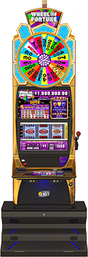

Wheel Of Fortune Mechanical Reel Slot Machine
Project Date: May 2018 - December 2018
Project Design
With great power, comes great responsibility. Well, at least that's
how the line goes in every superhero movie. As I started my first
industry solo engineering project, I realized that this is also
the case when being the only engineer on the project. Every day
you get to make decisions that affect how the final project will
look and feel. These choices might seem minute in the beginning,
but in the end, these design decisions can limit you or help to
make your life easier.

Game Design
From a design perspective, this game was about fusing two known
game mechanics, Wheel Of Fortune (WOF) Super Times Pay and the
Gold Spin Deluxe family of games. IGT has made plenty of WOF games
throughout its history, and Super Times Pay has been a staple of the
brand. On the other hand, Gold Spin Deluxe is a relatively new game
mechanic where players get a chance to spin digital wheels before
the iconic physical wheel. The virtual wheel can award additional
pointers on the wheel and/or multiplier that help the player on
the physical wheel spin.
Engineering
While there are always a plethora of challenges you face during
software development, one of the biggest problems I faced during
this project was how to come with clean, elegant solutions to a
problem while minimizing the change lists impact on the rest of
the codebase.
"Big asks" late in development are when a game's stakeholders want to add a feature that would cause regression changes throughout the application. Depending on the state of the game, it can be breaking changes, and it's the reason we try so hard to make everything as robust and interchangeable as possible.
The big ask late in development for this game was to show every value in the game in currency (i.e. $5.00 instead of 5 credits) when the game is set up for high limit gambling. While some values were already in currency, the vast majority weren't. It would have been labor-intensive to go to every text area in Unity (probably 200+) and attach additional scripts that would handle the conversion, so a better solution needed to be implemented.
The solution was to create a dynamic display mode that checked the game's settings and updated all of the text areas accordingly. This also required the backend to be refactored to include the correct values so that the game could easily switch between currency and credits. The functionality was even extended so that certain images would be displayed at certain limits. All of this had to be done, while the game was already late in testing so that minimal changes were done to avoid additional regression testing.
"Big asks" late in development are when a game's stakeholders want to add a feature that would cause regression changes throughout the application. Depending on the state of the game, it can be breaking changes, and it's the reason we try so hard to make everything as robust and interchangeable as possible.
The big ask late in development for this game was to show every value in the game in currency (i.e. $5.00 instead of 5 credits) when the game is set up for high limit gambling. While some values were already in currency, the vast majority weren't. It would have been labor-intensive to go to every text area in Unity (probably 200+) and attach additional scripts that would handle the conversion, so a better solution needed to be implemented.
The solution was to create a dynamic display mode that checked the game's settings and updated all of the text areas accordingly. This also required the backend to be refactored to include the correct values so that the game could easily switch between currency and credits. The functionality was even extended so that certain images would be displayed at certain limits. All of this had to be done, while the game was already late in testing so that minimal changes were done to avoid additional regression testing.